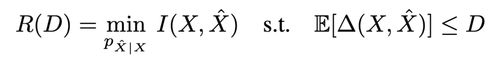
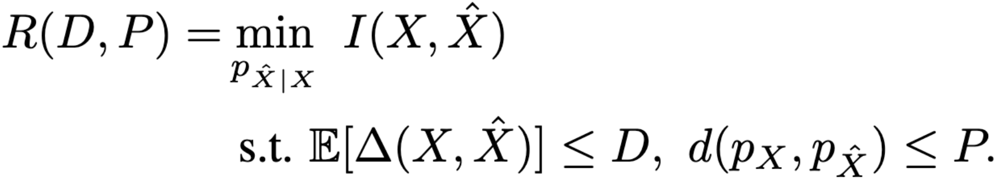
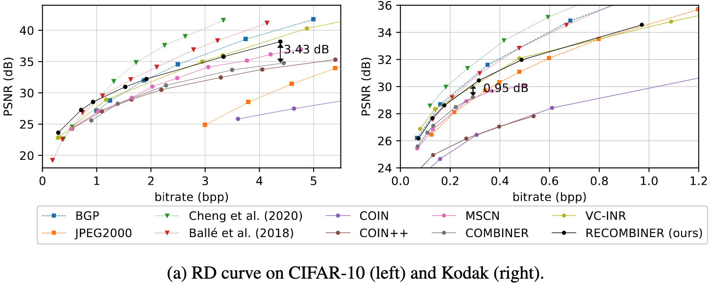
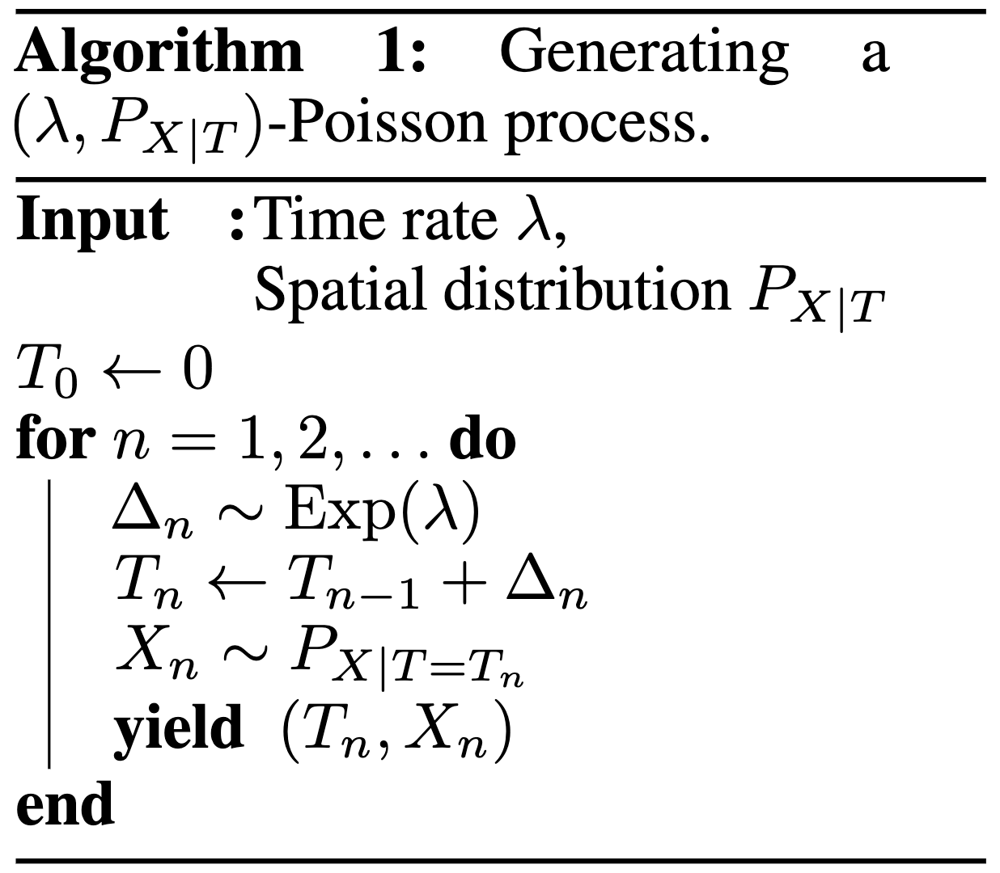

An Introduction to Relative Entropy Coding
Gergely Flamich
04/10/2023
1. In Collaboration With


2. Talk Overview
- Transform coding & problems with \(\lfloor \cdot \rceil\)
- What is REC?
- How can we use REC?
- An example of a REC algorithm
3. Motivation
3.1. Example: Lossy Image Compression


3.2. The Setup
Get an image \(Y \sim P_Y\)
\(\mathbb{H}[Y]\) bits is best we can do to compress \(Y\)
- \(\mathbb{H}[Y]\) might be infinite
- \(\mathbb{H}[Y]\) finite, but \(P_Y\) complicated
3.3. The Transform
\(X = f(Y)\)
- Pick \(f\) such that \(P_{X \mid Y}\) is "nice"
- KLT/DCT
- inference network of VAE
- \(\mathbb{H}[X]\) might still be infinite
3.4. Quantization + Entropy Coding
\(\hat{X} = \lfloor X \rceil\)
\(\mathbb{H}[\hat{X}] < \infty\)
- \(\lfloor \cdot \rceil\) not differentiable
- Don't have precise control over \(P_{\hat{X} \mid Y}\)
4. What is Relative Entropy Coding?
üí° stochastic alternative to \(\lfloor \cdot \rceil\) & entropy coding
4.1. Relative Entropy Coding
üí° \(X = f(Y) + \epsilon\)
Pros:
- Precise control over \(P_{X \mid Y}\) via \(\epsilon\)!
- Can use reparameterization trick!
But:
- How do we send \(X\)?
- How many bits do we need?
4.2. Rough Idea for Achievability
Assume:
- Sender / receiver share \(P_X\)
- They share a PRNG seed \(S\)
- \(P_X\) is easy to sample from
Encoding procedure:
- Simulate \(N\) samples \(X_1, \dots, X_N \sim P_X\)
- Pick one of the samples \(X_K\).
- Encode \(K\) using \(\approx \log K\) bits.
4.3. Coding Efficiency
When common randomness \(S\) available, there exists an algorithm, such that (Li and El Gamal, 2017): \[ {\color{red} I[X; Y]} \leq H[X \mid S] \leq {\color{red} I[X; Y]} + {\color{blue} \log (I[X; Y] + 1) + 4} \]
\(I[X; Y]\) - Information in \(P_{X, Y}\) compared to \(P_X \otimes P_Y\)
\(I[X; Y]\) can be finite even when \(H[X]\) is infinite!
4.4. Time Complexity
This is THE limitation of REC in practice currently
5. How Can We Use Relative Entropy Coding?
üí° Think of \(P_{X, Y}\) as a generative model!
5.1. Lossy Compression with Realism Constraints
Rate-Distortion trade-off 
Rate-Distortion-Perception trade-off 
5.2. Lossy Compression with Realism Constraints
- Theis & Agustsson (2021):
- REC provably better than quantization.
- Theis et al. (2022):

5.3. Model Compression

- Dataset \(\mathcal{D} \sim P_{\mathcal{D}}\)
- NN \(f(w, x)\) with weights \(w\) with prior \(P_w\)
- Train weight posterior \(P_{w \mid \mathcal{D}}\) using ELBO
- Encode \(w \sim P_{w \mid \mathcal{D}}\) in \(I[w; \mathcal{D}]\) bits
Image from Blundell et al. (2015)
5.4. Model Compression
Havasi et al. (2018): MIRACLE

5.5. Data Compression with INRs

Image from Dupont et al. (2021)
Problem: Post-training quantization severely impacts performance!
5.6. Compress variational INRs!
COMBINER: COMpression with Bayesian Implicit Neural Representations
RECOMBINER: Robust and Enhanced COMBINER
5.7. Compress variational INRs!
5.8. Compress variational INRs!

6. Current limitations of REC
Current REC algorithms are:
- Too slow (Agustsson & Theis, 2020):
- Average runtime of any general REC algorithm must scale at least \(2^{I[X; Z]}\)
- Too limited:
- Uniforms only (Agustsson & Theis, 2020)
- 1D unimodal distributions only (F et al., 2022)
- Too much codelength overhead
Open problem: \(\mathcal{O}(I[X; Z])\) runtime when both \(P_{Z \mid X}\) and \(P_Z\) are multivariate Gaussian?
7. Take home message: Overview and Applications
- REC is a stochastic compression framework
- Alternative to quantization and entropy coding
- It finds applications in:
- Lossy compression with realism constraints
- Model compression
- Compressing Bayesian INRs
- Currently still too slow or limited
8. Greedy Poisson Rejection Sampling
8.1. Recap of the Problem
Correlated r.v.s \(X, Y \sim P_{X, Y}\)
Alice receives \(Y \sim P_Y\)
Bob wants to simulate \(X \sim P_{X \mid Y}\)
Share common randomness \(S\)
Shorthand: \(P = P_X\), \(Q = P_{X \mid Y}\)
8.2. Poisson Processes
- Collection of random points in space
- Focus on spatio-temporal processes on \(\mathbb{R}^D \times \mathbb{R}^+\)
- Exponential inter-arrival times
- Spatial distribution \(P_{X \mid T}\)
- We will pick it as the common randomness!
8.3. Poisson Processes
8.4. Example with \(P_{X \mid T} = \mathcal{N}(0, 1)\)

8.5. Example with \(P_{X \mid T} = \mathcal{N}(0, 1)\)

8.6. Example with \(P_{X \mid T} = \mathcal{N}(0, 1)\)

8.7. Example with \(P_{X \mid T} = \mathcal{N}(0, 1)\)

8.8. Example with \(P_{X \mid T} = \mathcal{N}(0, 1)\)

8.9. Example with \(P_{X \mid T} = \mathcal{N}(0, 1)\)

8.10. Example with \(P_{X \mid T} = \mathcal{N}(0, 1)\)

8.11. Example with \(P_{X \mid T} = \mathcal{N}(0, 1)\)

8.12. Greedy Poisson Rejection Sampling
üí° Delete some of the points, encode index of the first point that remains
8.13. GPRS with \(P = \mathcal{N}(0, 1), Q = \mathcal{N}(1, 1/16)\)

8.14. GPRS with \(P = \mathcal{N}(0, 1), Q = \mathcal{N}(1, 1/16)\)

8.15. GPRS with \(P = \mathcal{N}(0, 1), Q = \mathcal{N}(1, 1/16)\)

8.16. GPRS with \(P = \mathcal{N}(0, 1), Q = \mathcal{N}(1, 1/16)\)

8.17. GPRS with \(P = \mathcal{N}(0, 1), Q = \mathcal{N}(1, 1/16)\)

8.18. GPRS with \(P = \mathcal{N}(0, 1), Q = \mathcal{N}(1, 1/16)\)

8.19. GPRS with \(P = \mathcal{N}(0, 1), Q = \mathcal{N}(1, 1/16)\)

8.20. How to find the graph?
\[ \varphi(x) = \int_0^{\frac{dQ}{dP}(x)} \frac{1}{w_Q(\eta) - \eta \cdot w_P(\eta)} \, d\eta, \]
where \[ w_P(h) = \mathbb{P}_{Z \sim P}\left[\frac{dQ}{dP}(Z) \geq h \right] \] \[ w_Q(h) = \mathbb{P}_{Z \sim Q}\left[\frac{dQ}{dP}(Z) \geq h \right] \]
8.21. Analysis of GPRS
Codelength
Runtime
\[ \mathbb{E}[K \mid Y] = \exp(D_{\infty}[P_{X \mid Y} \Vert P_X]) \]
8.22. Speeding up GPRS
8.23. Fast GPRS with \(P = \mathcal{N}(0, 1), Q = \mathcal{N}(1, 1/16)\)

8.24. Fast GPRS with \(P = \mathcal{N}(0, 1), Q = \mathcal{N}(1, 1/16)\)

8.25. Fast GPRS with \(P = \mathcal{N}(0, 1), Q = \mathcal{N}(1, 1/16)\)

8.26. Fast GPRS with \(P = \mathcal{N}(0, 1), Q = \mathcal{N}(1, 1/16)\)

8.27. Fast GPRS with \(P = \mathcal{N}(0, 1), Q = \mathcal{N}(1, 1/16)\)

8.28. Fast GPRS with \(P = \mathcal{N}(0, 1), Q = \mathcal{N}(1, 1/16)\)

8.29. Analysis of faster GPRS
Now, encode search path \(\pi\).
\(H[\pi] \leq I[X; Y] + \log(I[X; Y] + 1) + \mathcal{O}(1)\)
\(\mathbb{E}[\lvert\pi\rvert] = \mathcal{O}(I[X; Z])\)
This is optimal.
9. Take home message: GPRS
- GPRS is a rejection sampler using Poisson processes
- Can be used for relative entropy coding
- Has an optimally efficient variant for 1D, unimodal distributions
10. References
10.1. References I
- E. Agustsson and L. Theis. "Universally quantized neural compression" In NeurIPS 2020.
- C. Blundell, J. Cornebise, K. Kavukcuoglu and D. Wierstra. Weight uncertainty in neural network. In ICML 2015.
- E. Dupont, A. Golinski, M. Alizadeh, Y. W. Teh and Arnaud Doucet. "COIN: compression with implicit neural representations" arXiv preprint arXiv:2103.03123, 2021.
10.2. References II
- G. F. “Greedy Poisson Rejection Sampling” NeurIPS 2023, to appear.
- G. F.*, S. Markou*, and J. M. Hernandez-Lobato. "Fast relative entropy coding with A* coding". In ICML 2022.
- D. Goc and G. F. “On Channel Simulation Conjectures” unpublished.
10.3. References III
- Z. Guo*, G. F.*, J. He, Z. Chen and J. M. Hernandez Lobato, “Compression with Bayesian Implicit Neural Representations” NeurIPS 2023, to appear.
- P. Harsha, R. Jain, D. McAllester, and J. Radhakrishnan, “The communication complexity of correlation,” IEEE Transactions on Information Theory, vol. 56, no. 1, pp. 438–449, 2010.
- M. Havasi, R. Peharz, and J. M. HernaÃÅndez-Lobato. "Minimal Random Code Learning: Getting Bits Back from Compressed Model Parameters" In ICLR 2019.
10.4. References IV
- J. He*, G. F.*, Z. Guo and J. M. Hernandez Lobato, “RECOMBINER: Robust and Enhanced Compression with Bayesian Implicit Neural Representations” unpublished.
- C. T. Li and A. El Gamal, “Strong functional representation lemma and applications to coding theorems,” IEEE Transactions on Information Theory, vol. 64, no. 11, pp. 6967–6978, 2018.
10.5. References V
- L. Theis and E. Agustsson. On the advantages of stochastic encoders. arXiv preprint arXiv:2102.09270.
- L. Theis, T. Salimans, M. D. Hoffman and F. Mentzer (2022). Lossy compression with Gaussian diffusion. arXiv preprint arXiv:2206.08889.
11. Other material